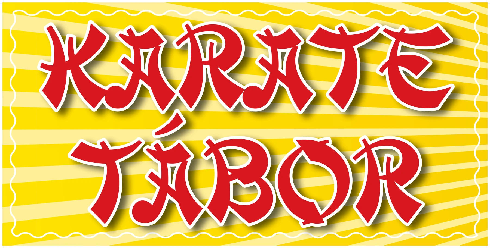
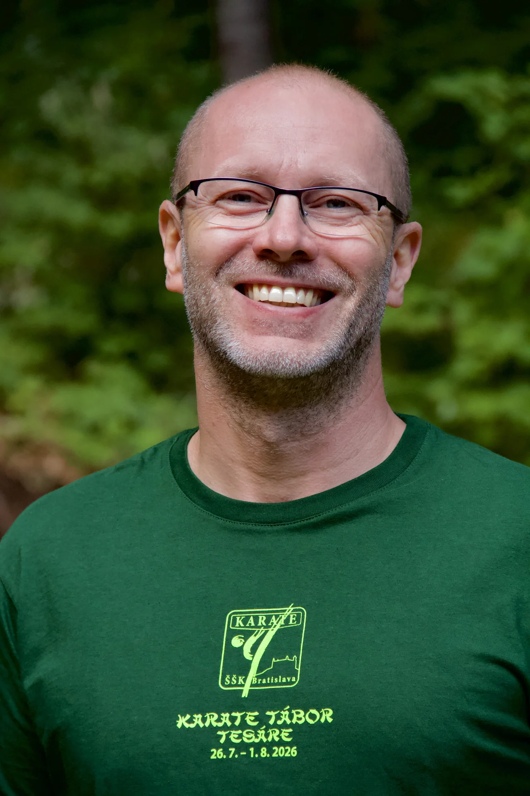
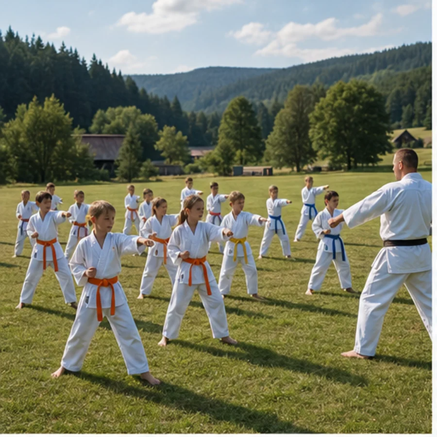
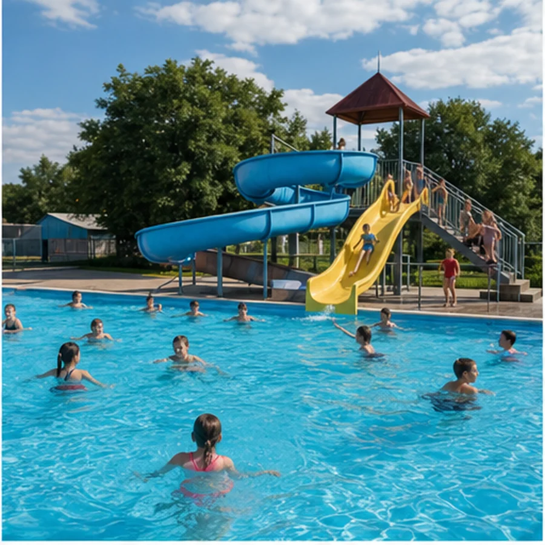
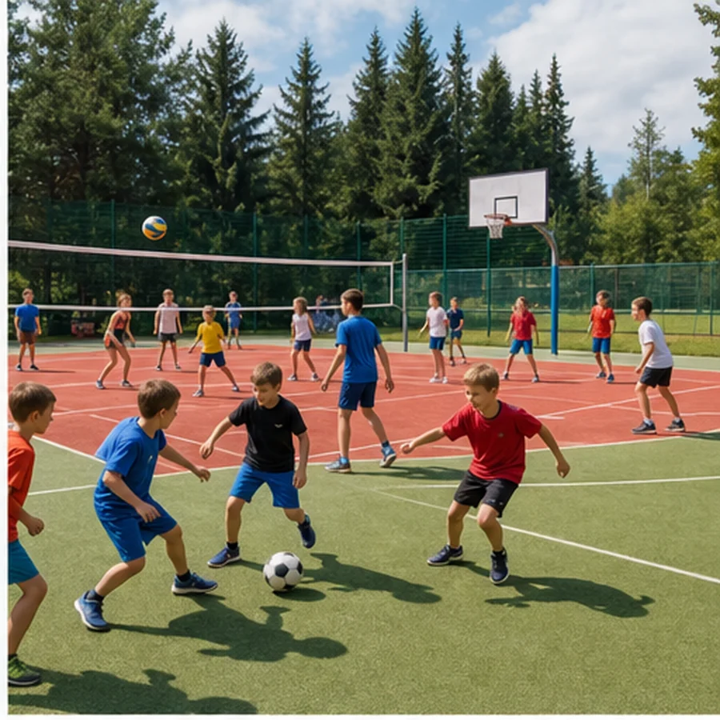
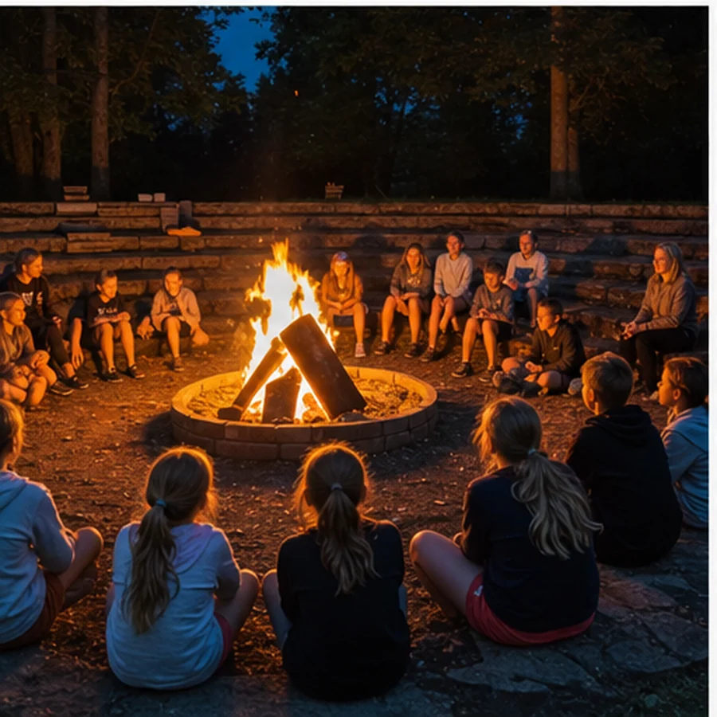
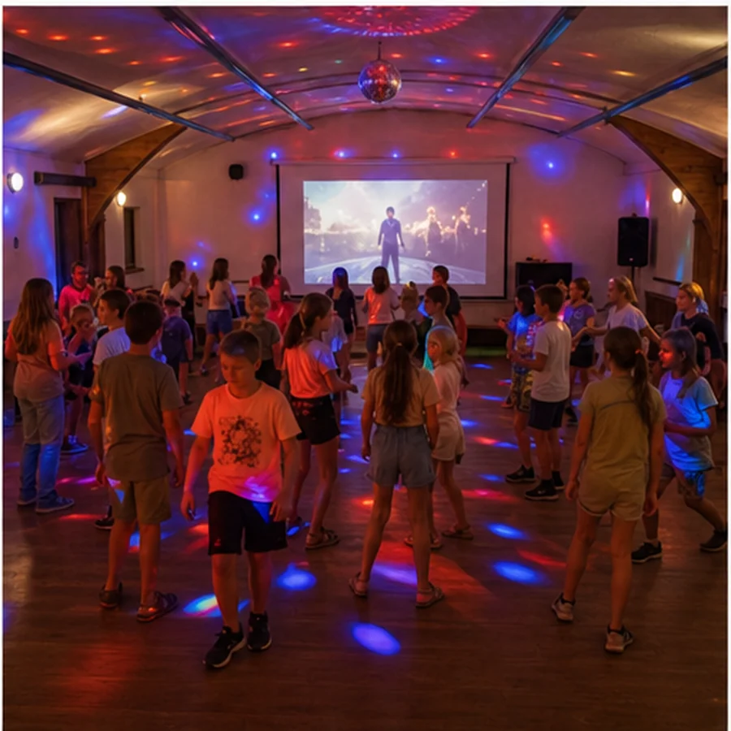
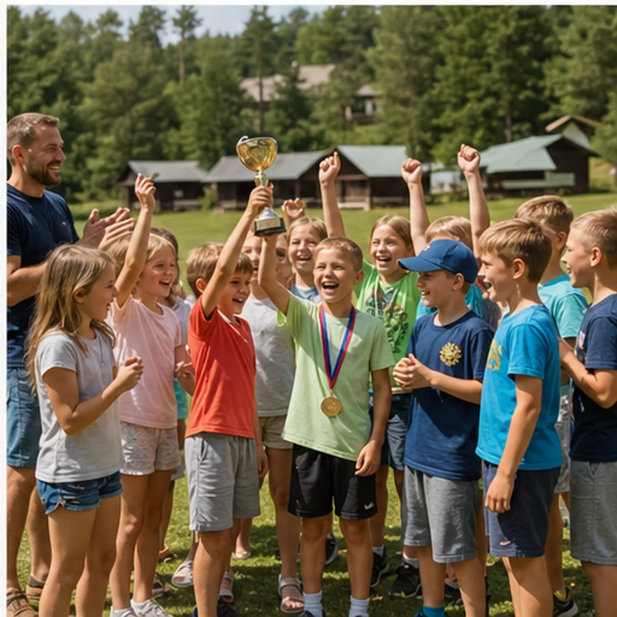
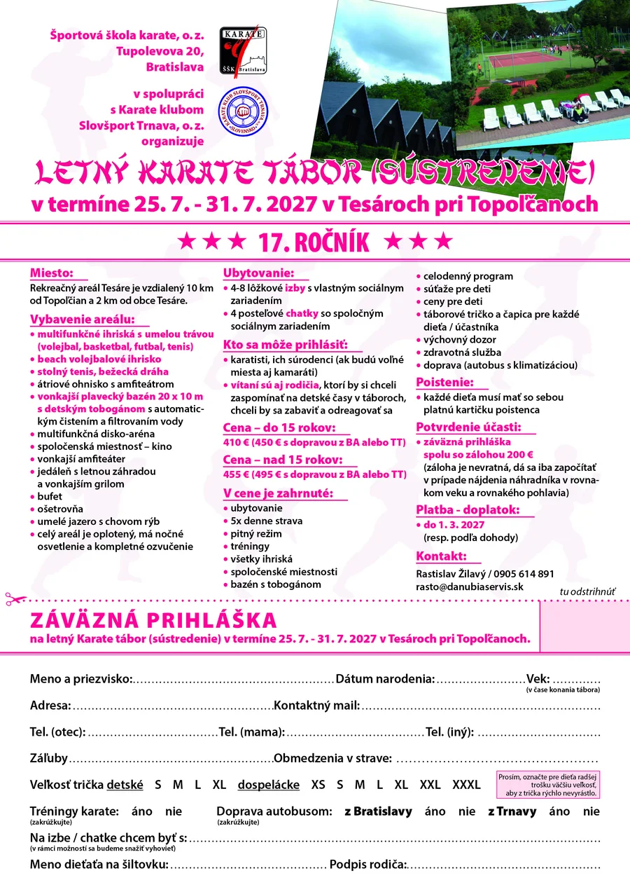

Primerané tréningy
Každodenné karate v prostredí, kde má miesto sústredenie aj radosť z pohybu.
17. ročník25. – 31. júla 2027Tesáre pri Topoľčanoch
Stiahnuť prihláškuLetný karate tábor · Tesáre
Týždeň plný karate, športu, vody, hier a priateľstiev. Pre karatistov, súrodencov a podľa voľných miest aj kamarátov.

Organizuje
Športová škola karate, o. z. · BratislavaKarate klub Slovšport Trnava, o. z.O tábore

Tábor je určený karatistom a ich súrodencom. Ak zostanú voľné miesta, radi privítame aj kamarátov. Pridať sa môžu aj rodičia, ktorí si chcú oddýchnuť, zabaviť sa a zaspomínať na táborové časy.
Každodenné karate v prostredí, kde má miesto sústredenie aj radosť z pohybu.
Šport, súťaže, voda, spoločné večery a zážitky od rána do večera.
Výchovný dozor, zdravotná služba, päť jedál denne a pitný režim.
Areál a program
Rekreačný areál Tesáre spája športoviská, prírodu, vodu aj priestory na spoločný program v jednom oplotenom areáli.

Pravidelný tréningový program dopĺňajú športové a tímové aktivity.
Karate každý deň
Vonkajší bazén 20 × 10 metrov s automatickým čistením vody.

Futbal, basketbal, volejbal, tenis, beach volejbal, stolný tenis aj bežecká dráha.

Átriové ohnisko, vonkajší amfiteáter a priestor na spoločné večery.

Spoločenská miestnosť, multifunkčná disko-aréna a program aj pod strechou.

Súťaže pre deti, ceny a táborové tričko s čapicou pre každého účastníka.
Bezpečné zázemieCelý areál je oplotený, má nočné osvetlenie, ošetrovňu a zdravotnú službu.
Ubytovanie4 – 8 lôžkové izby s vlastným sociálnym zariadením alebo 4-posteľové chatky.
StravaPäťkrát denne, pitný režim a jedáleň s letnou záhradou.
Prihláška 2027
Účastník do 15 rokov
Účastník nad 15 rokov
Záloha200 € spolu so záväznou prihláškou
Doplatokdo 1. marca 2027, prípadne podľa dohody
Záloha je nevratná; je možné ju započítať pri nájdení náhradníka v rovnakom veku a rovnakého pohlavia.
PDF · pripravené na tlač
Prihlášku si stiahnite, vytlačte a odošlite podľa dohody s organizátorom spolu so zálohou.
Stiahnuť PDF Otvoriť v novom okne ↗V cene je zahrnuté
Nezabudnite: Každé dieťa musí mať pri nástupe platnú kartičku poistenca.
Naša hymna
Pesnička, ktorú pozná každý správny táborník. Pusti si ju a nalaď sa na ďalší ročník.
Teším sa na tábor,
ktorý mám tak rád,
chodím sem každý rok,
už neviem koľkýkrát.
Je nás tu mnoho,
chceme sa spolu hrať,
len si to predstav,
čo ti tábor môže dať.
Cvičíme každý deň,
s trénermi je sranda,
potom na tobogán
ide celá banda.
Rýchlo sa pridaj k nám,
splň si detský sen,
v Karate tábore
zabávaj sa len.
REFRÉNZahraj sa so mnou, veď času máme málo,
aby sa nám všetkým dobre zabávaló-óó.
Nevidíš, ako to tu vrieéééé?
Tak povedz nude nie!
Večerný táborák,
hľadanie pokladu,
vystúpko, prekvapko
ti zlepšia náladu.
Najlepší program,
ktorý chutí za sto,
tak ten ti pripravia
kamaráti s Rasťom.
REFRÉNZahraj sa so mnou, veď času máme málo,
aby sa nám všetkým dobre zabávaló-óó.
Nevidíš, ako to tu vrieéééé?
Na nudu vravím nie!
Vravím nie, vravím niééééé.
Každý rok tu kamarátov nájdeš,
s nimi celý pobyt hravo zvládneš.
Nevadí, keď skončí tento tábor,
o rok bude opäť ďalší nábor.
ZÁVERZahraj sa so mnou, veď času máme málo,
aby sa nám spolu dobre zabávaló-óó.
Nevidíš, ako to tu vrieéééé?
Na nudu vravím nie!
Óóóóóóóóó, vravím niééé.
Kontakt
Informácie o prihlásení, doprave aj pobyte vám rád doplní hlavný kontakt tábora.
25. – 31. júla 2027
Stiahni si záväznú prihlášku a rezervuj miesto na 17. ročníku.